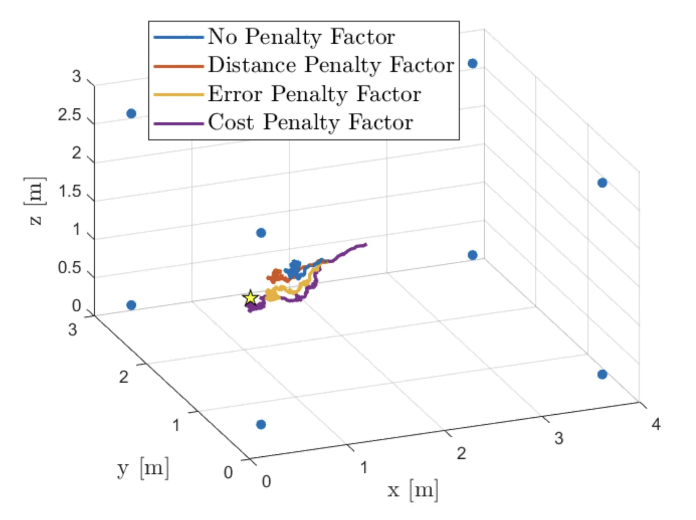
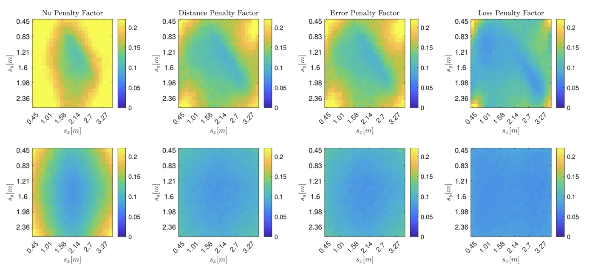

Abstract
Microphone-array networks for 3D sound source localization usually rely on centralized processing, which limits scalability and robustness. We recast localization with a network of arrays as a distributed optimization problem and compare a computationally centralized solution with a fully distributed one based on an Adapt-Then-Combine (ATC) diffusion strategy. Each linear array estimates a stream of 2D directions of arrival, and arrays cooperate with their neighbors to localize a single source. Adaptive cooperation strategies penalize the arrays that degrade accuracy the most, and the method stays accurate and stable even in sparsely connected networks.
Method
ATC diffusion
Each node updates its estimate locally with a stochastic gradient step, then combines it with its neighbors’ estimates; no fusion center is needed.
Cooperation penalties
Error-based and distance-based penalties lower the weight of arrays whose DoA estimates are noisy or unreliable.
From planar to linear arrays
ICASSP 2023 introduced the approach with planar arrays estimating 2D DoAs; the Sensors article extends it to networks of linear arrays.
Evaluation
Increasingly complex DoA stream models in simulated rooms with different reverberation and SNR, plus an analysis of network connectivity.
Interactive demo
Click on the canvas to place up to two sources. Agents estimate the source positions and exchange their estimates with neighbors; thicker links mean stronger cooperation.
Illustrative browser simulation of cooperative localization.
Results
The cooperative strategies reduce the localization error over the whole room with respect to cooperation without penalties, and the method keeps high accuracy and stability as the network becomes sparser.


Cite this work
D. Albertini, A. Bernardini, G. Greco, and A. Sarti, “Diffusion-Based Sound Source Localization Using a Distributed Network of Microphone Arrays,” Sensors, vol. 25, no. 7, p. 2078, 2025. doi: 10.3390/s25072078
@article{albertini2025diffusion,
title = {Diffusion-Based Sound Source Localization Using a Distributed Network of Microphone Arrays},
author = {Albertini, Davide and Bernardini, Alberto and Greco, Gioele and Sarti, Augusto},
journal = {Sensors},
volume = {25},
number = {7},
pages = {2078},
year = {2025},
doi = {10.3390/s25072078}
}Related publication
D. Albertini, G. Greco, A. Bernardini, and A. Sarti, “Diffusion-Based Sound Source Localization Using Networks of Planar Microphone Arrays,” in Proc. IEEE ICASSP, 2023. doi: 10.1109/ICASSP49357.2023.10095405